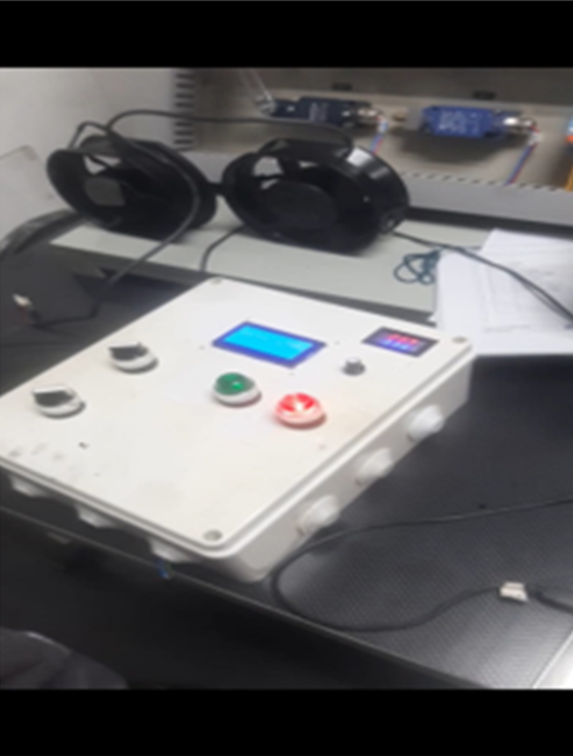
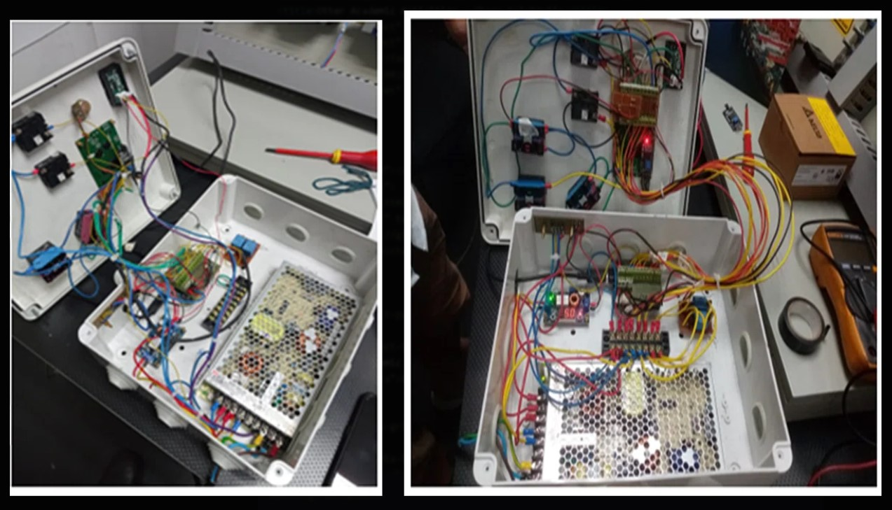

Dedicated QC inverter fan tester — identifies faulty cooling fans before they trigger a crane fault.
Quay Crane Inverter Fan Tester
The problem
Quay cranes use large inverters to drive their hoist and trolley motors. These inverters rely on four cooling fans. When one fails, the inverter throws a generic "blower fan fault" — but there was no device on-site to identify which of the four fans was actually faulty. Technicians had to guess or swap them out one by one, causing unnecessary downtime.
The solution
I designed and built a dedicated tester. It applies a PWM signal to drive the fans and monitors the feedback from the built-in tachometer. By comparing the commanded speed against the actual measured RPM, the device instantly identifies which fan is underperforming or dead.

Internal build
Custom controller board, PWM driver stage, and feedback monitoring wiring.